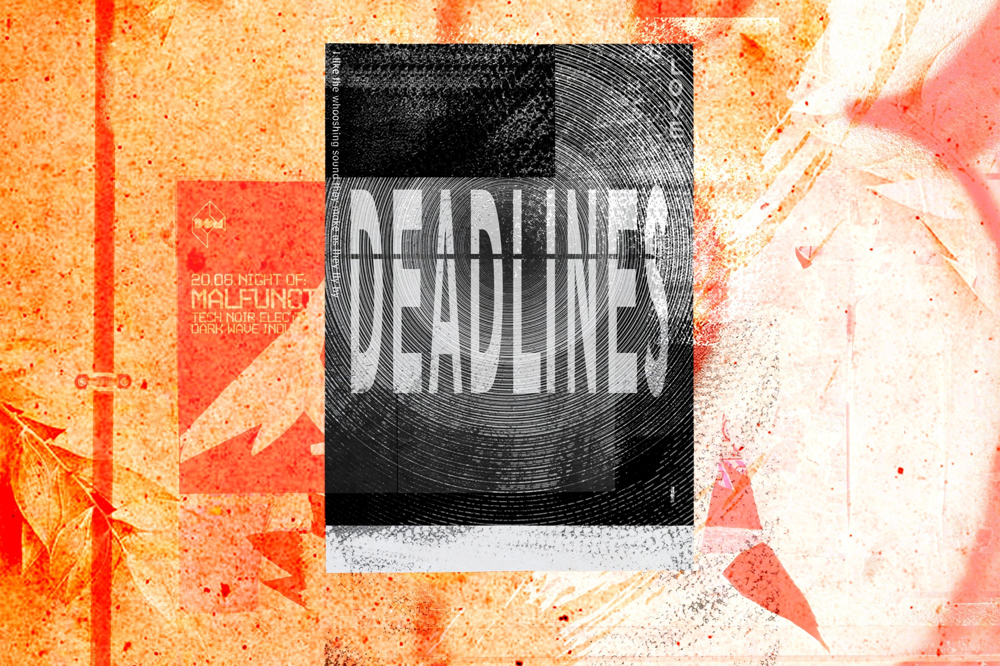
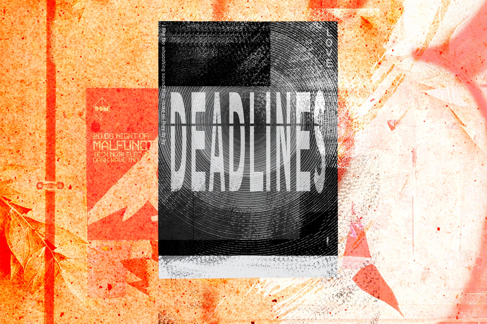
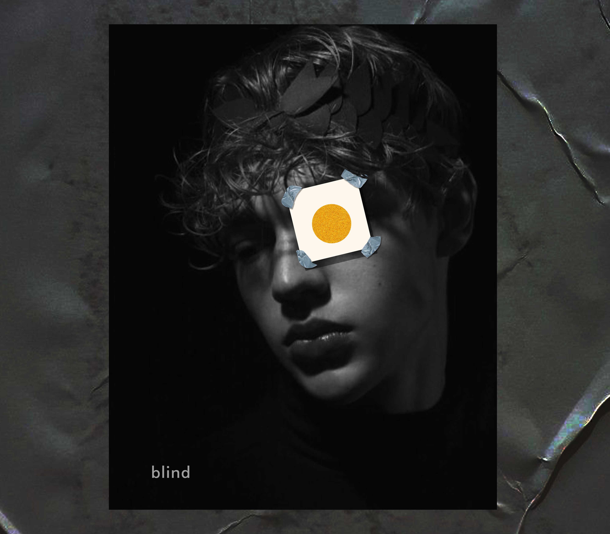
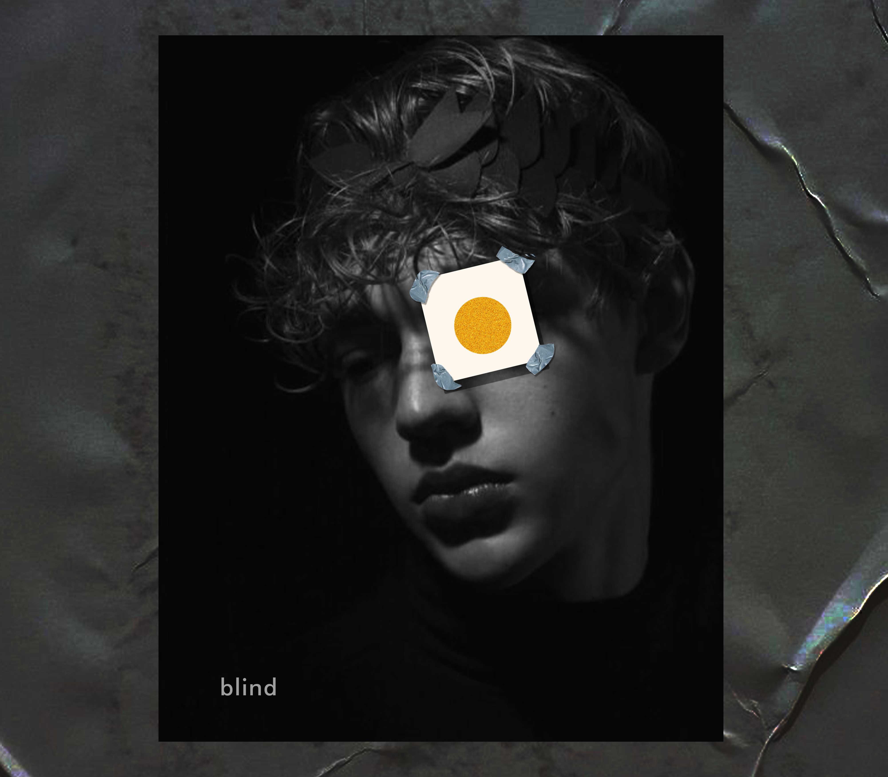

Asthetic Posters
Our feelings are not there to be cast out or conquered. They're there to be engaged and expressed with imagination and intelligence.
I have started designing these posters portaying the scenarious and expressing my feeling about how to stand and walk around and to feel strong.
| Personal Project |
 



 
